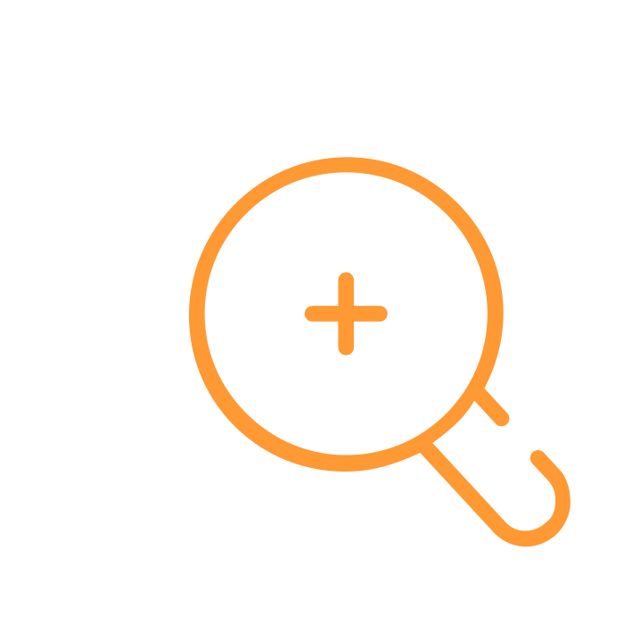
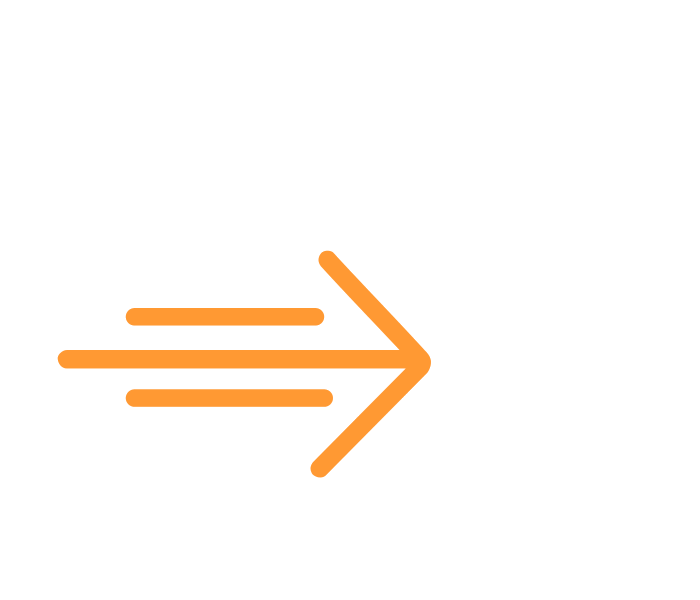

Website iconography · orange stroke · pg 16
icon-checklist

icon-search-plus
icon-arrow-boldicon-speech
Usage: Website feature & process callouts only. Always brand orange, always small-scale. Not a full icon system — only these six; reach for Lucide (orange stroke, 2px) when you need something else.